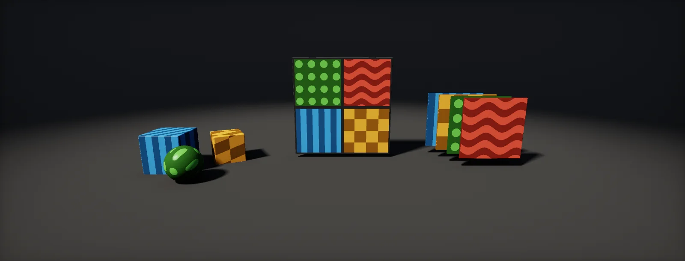

Atlases, Texture Arrays and Unique Textures
Four containers for many objects' textures, what a shared texture actually saves with each kind of batching, the costs of atlases (padding, mips, tiling), texture arrays and their limits, when unique textures win, bindless and virtual texturing, and a decision table, built in Unity HDRP and Unreal.

Four ways to give many objects their textures
When many objects need different textures, there are four containers to put them in. The choice changes how many materials the scene has, how textures stream, and what the shader has to do:
| Layout | What it is | Shader sees | Main limits |
|---|---|---|---|
| Unique textures | One texture set per asset | A different texture per material | One material per texture set |
| Atlas | Several assets' textures packed into rectangles of one texture | One texture; UVs point into a rectangle | Padding and mip bleeding, no hardware wrap inside a rectangle, all assets stream together |
| Texture array | A stack of same-size, same-format textures (slices) | One array; a slice index picks the layer | Same size, format and mip count; the array is one resource |
| Bindless / virtual texturing | Textures picked by index from a global table, or tiles of a huge virtual texture | An index or a page-table lookup | Engine and platform support; an extra indirection |
Tiling materials and trim sheets are a fifth answer, avoiding per-asset textures altogether (unique, tiling and trim sheets); this unit is about the cases where each asset still has its own texels.
What a shared texture actually saves
The usual reason for an atlas or array is draw calls: one material instead of many. Whether that saves anything depends on how the engine batches:
- Persistent material data (Unity's SRP Batcher, similar systems elsewhere) already makes switching between materials of the same shader cheap; each object is still its own draw. Sharing textures saves little CPU time here.
- Static batching and mesh merging combine different meshes into one draw per material. Here one shared material pays fully: forty props with forty materials become forty merged draws, with one atlas or array they become one.
- Instancing (GPU instancing, Unity's GPU Resident Drawer, Unreal's instanced static meshes) groups by mesh and material. Different meshes stay different draws whatever the textures; a shared array helps when one mesh has several texture variants, picked per instance.
- Nanite draws by material: fewer materials mean fewer material passes.
Atlases: padding, mips and tiling
An atlas packs the textures of several assets into rectangles of one texture, and each asset's UVs are remapped into its rectangle. Three costs come with it. Neighbouring rectangles bleed into each other in the small mips, because a mip texel averages texels across the rectangle borders; padding pushes that down, but only to a point:
Second, the hardware wrap mode works on the whole atlas, not on a rectangle: a texture that tiles cannot repeat inside its rectangle unless the shader wraps the UV itself, and that wrap is a jump that needs explicit gradients (gradients at cell borders):
// Tiling inside an atlas rectangle: wrap in the shader, and keep the derivatives of the
// continuous UV so the mip does not jump at the wrap (otherwise: a line at every tile border).
float4 SampleAtlasTiled(Texture2D atlas, SamplerState s, float2 uv, float4 rect, float inset)
{
// rect.xy = rectangle origin, rect.zw = rectangle size (both 0..1); inset in UV keeps bilinear
// filtering inside the padding
float2 dx = ddx(uv) * rect.zw, dy = ddy(uv) * rect.zw;
float2 local = frac(uv) * (rect.zw - 2 * inset) + inset;
return atlas.SampleGrad(s, rect.xy + local, dx, dy);
}
Third, an atlas is one texture for streaming and memory: it is loaded at the resolution its closest user needs, for all assets on it. Pack assets that appear together (one room, one kit, one level area), not assets that only share a shader.
Texture arrays
A texture array is a stack of textures of identical size, format and mip count, bound as one resource. The shader samples it with a third coordinate, the slice index, which can come from a vertex channel, a per-instance property, a material constant or a mask. Each slice has its own mip chain and its own wrap, so there is no bleeding and tiling works as usual. Arrays hold up to 2048 slices on desktop APIs (D3D11 and D3D12). Their limits are different from an atlas's:
- All slices must match: a 4K hero texture cannot sit in an array of 1K slices, and a BC5 normal map cannot share an array with BC7 colours (use one array per map type).
- The array is one resource. Unity's mipmap streaming does not support texture arrays at all, so the whole array is resident at full resolution; group slices by where they are used.
- Shaders must be written for arrays (
Texture2DArray,SAMPLE_TEXTURE2D_ARRAY); a slice index from interpolated data must be rounded and constant across a triangle.
The foliage unit has an editor script that builds an array from same-size textures (TextureArrayBuilder).
When unique textures win
Separate textures are the default for good reasons. Streaming works per texture, so memory follows what is near the camera; each texture can have its own size, format and compression settings; and nothing bleeds:
With modern batching (persistent material data, GPU-driven rendering) the CPU cost of many materials has shrunk, which moves the balance further toward unique textures for anything that is large or seen up close. Atlases and arrays remain the right tool where meshes are merged, where one mesh needs many variants, and on platforms where every draw still counts.
Bindless and virtual textures
Two newer techniques remove part of the problem. With bindless resources the shader reads textures from one global table by index, so a draw no longer has to bind its textures and the material switch between draws shrinks to a different index. id Software's Doom Eternal keeps such a global texture descriptor list and updates it as textures stream in and out; its GPU-driven batching relies on it. Engines expose bindless to different degrees, so check the target platforms and engine version.
Virtual texturing treats many textures (or one enormous one) as a single address space split into small pages; a page table maps the pages that are needed into a physical cache texture. It works like an automatic atlas that streams only the visible pages at the needed mip, at the cost of an extra lookup per sample and pages that occasionally arrive late. Unreal has streaming and runtime virtual textures; HDRP has streaming virtual texturing through Shader Graph's Sample Virtual Texture node.
Which one wins
A starting point for each common case:
| Case | Usually wins | Why |
|---|---|---|
| Hero props, characters, anything seen up close | Unique | Streams by distance, no size constraints, no bleeding |
| Many small props merged into one mesh or static batch | Atlas | One material means one merged draw; the props are small, so the lost small mips do not matter |
| Terrain layers, material layers, many variants of one shader | Array | One material, full resolution per layer, wrap works per slice |
| One mesh with several texture variants (crates, signs, clutter) drawn instanced | Array with a per-instance slice index | Instancing needs one material; the index picks the variant |
| Tiling surfaces | Separate tiling textures or an array, never an atlas | An atlas rectangle cannot wrap without shader work and seams |
| Foliage | Per-species atlas, arrays for grass | Foliage atlases |
| UI, sprites, fonts | Atlas | 2D batching; no mips needed or tiles rendered at fixed size |
Build it in Unity HDRP
The route bakes an atlas for a set of small props that will be merged or statically batched, adds tiling inside an atlas rectangle for the rare case that needs it, and points to the texture-array builder for variants and layers. Written for Unity 6 with HDRP 17; Unity 2022 LTS works the same apart from a few renamed menu entries.
- Measure first: open Window > Analysis > Frame Debugger in the view where the props are and count their draws and SRP Batcher batches. If they are already batched per shader and the scene is not CPU-bound, an atlas will not change much (what sharing saves).
- Atlas for merged or statically batched props: put
AtlasBaker.csinAssets/Editor, select the props (HDRP/Lit materials, unique UVs inside 0–1) and run Tools > Optimization > Bake Atlas. It writes the atlases, remapped mesh copies and one material toAssets/Atlasesand assigns them with Undo. Then mark the props Static > Batching Static or merge them. - Normal maps: the tool prints each material's rectangle; pack the normal maps from their source files into the same rectangles in your texture tool, then assign the result as the shared material's normal map. Alternatively keep separate normal textures by using a texture array for the set.
- Texture arrays for variants of one mesh or for material layers: build the array with TextureArrayBuilder.cs and sample it with a Sample Texture 2D Array node. Drive the slice index from a vertex colour or UV channel (one material for all variants, so batching and instancing keep working), rounded with Round so it is constant across each triangle.
- Tiling inside an atlas (avoid where possible): In the graph, add a Custom Function node. Set Type to
File, Source toAtlasTile.hlsland Name toAtlasTile(without the_floatsuffix). Add the inputs Atlas (Texture2D), UV (Vector 2), Rect (Vector 4), Inset (Float) and the outputs Color (Vector 4), in that order and with those types: they must match the function's parameters. Set the atlas texture's Wrap Mode to Clamp. - Check the result in the Frame Debugger again, and the memory in the Memory Profiler: atlases and arrays are resident as a whole.
// Assets/Editor/AtlasBaker.cs
// Select prefabs or scene objects whose renderers use HDRP/Lit with unique (0..1) UVs,
// then Tools > Optimization > Bake Atlas. It packs their Base Color and Mask maps into one atlas
// each, remaps UV0 of copies of their meshes into the atlas rectangles, and creates one shared
// material. Normal maps are listed but not packed: pack them from their source files with the
// printed rectangles, or use a texture array, which keeps BC5 data untouched.
using System.Collections.Generic;
using System.IO;
using System.Linq;
using UnityEditor;
using UnityEngine;
public static class AtlasBaker
{
const int MaxSize = 4096, Padding = 8;
const string Out = "Assets/Atlases";
[MenuItem("Tools/Optimization/Bake Atlas")]
static void Bake()
{
var renderers = Selection.GetFiltered<MeshRenderer>(SelectionMode.Deep)
.Where(r => r.sharedMaterial && r.sharedMaterial.HasProperty("_BaseColorMap") && r.sharedMaterial.GetTexture("_BaseColorMap")).ToList();
var mats = renderers.Select(r => r.sharedMaterial).Distinct().ToList();
if (mats.Count < 2) { Debug.LogError("Bake Atlas: select objects with at least two different Lit materials."); return; }
foreach (var r in renderers)
{
var uv = new List<Vector2>(); r.GetComponent<MeshFilter>().sharedMesh.GetUVs(0, uv);
if (uv.Any(u => u.x < -0.001f || u.y < -0.001f || u.x > 1.001f || u.y > 1.001f))
{ Debug.LogError($"{r.name}: UV0 leaves 0..1 (tiling). Tiling textures cannot go into an atlas."); return; }
}
Directory.CreateDirectory(Out);
// layout from the base colour maps
var bases = mats.Select(m => Readable((Texture2D)m.GetTexture("_BaseColorMap"), -1, -1, true)).ToArray();
var layout = new Texture2D(8, 8);
Rect[] rects = layout.PackTextures(bases, Padding, MaxSize, false);
int W = layout.width, H = layout.height;
Texture2D Build(string prop, bool srgb, Color fill)
{
var atlas = new Texture2D(W, H, TextureFormat.RGBA32, false, !srgb);
var px = Enumerable.Repeat((Color32)fill, W * H).ToArray();
for (int i = 0; i < mats.Count; i++)
{
var src = mats[i].HasProperty(prop) ? mats[i].GetTexture(prop) as Texture2D : null;
int x0 = Mathf.RoundToInt(rects[i].x * W), y0 = Mathf.RoundToInt(rects[i].y * H);
int w = Mathf.RoundToInt(rects[i].width * W), h = Mathf.RoundToInt(rects[i].height * H);
var tile = src ? Readable(src, w, h, srgb).GetPixels32() : Enumerable.Repeat((Color32)fill, w * h).ToArray();
// copy, then extend the edges into the padding so small mips bleed less
for (int y = -Padding / 2; y < h + Padding / 2; y++)
for (int x = -Padding / 2; x < w + Padding / 2; x++)
{
int ax = x0 + x, ay = y0 + y; if (ax < 0 || ay < 0 || ax >= W || ay >= H) continue;
px[ay * W + ax] = tile[Mathf.Clamp(y, 0, h - 1) * w + Mathf.Clamp(x, 0, w - 1)];
}
}
atlas.SetPixels32(px); atlas.Apply(false);
string path = $"{Out}/Atlas{prop}.png";
File.WriteAllBytes(path, atlas.EncodeToPNG()); AssetDatabase.ImportAsset(path);
var ti = (TextureImporter)AssetImporter.GetAtPath(path); ti.sRGBTexture = srgb; ti.maxTextureSize = MaxSize; ti.SaveAndReimport();
return AssetDatabase.LoadAssetAtPath<Texture2D>(path);
}
var baseAtlas = Build("_BaseColorMap", true, Color.gray);
var maskAtlas = Build("_MaskMap", false, new Color(0f, 1f, 1f, 0.5f)); // metallic 0, AO 1, detail 1, smoothness 0.5
var shared = new Material(mats[0]) { name = "AtlasMaterial" };
shared.SetTexture("_BaseColorMap", baseAtlas); shared.SetTexture("_MaskMap", maskAtlas); shared.SetTexture("_NormalMap", null);
shared.SetTextureScale("_BaseColorMap", Vector2.one); shared.SetTextureOffset("_BaseColorMap", Vector2.zero);
AssetDatabase.CreateAsset(shared, $"{Out}/AtlasMaterial.mat");
var done = new Dictionary<Mesh, Mesh>();
foreach (var r in renderers)
{
var mf = r.GetComponent<MeshFilter>(); var src = mf.sharedMesh; var rect = rects[mats.IndexOf(r.sharedMaterial)];
if (!done.TryGetValue(src, out var dst))
{
dst = Object.Instantiate(src); dst.name = src.name + "_Atlas";
var uv = new List<Vector2>(); dst.GetUVs(0, uv);
for (int i = 0; i < uv.Count; i++) uv[i] = rect.position + Vector2.Scale(uv[i], rect.size);
dst.SetUVs(0, uv);
AssetDatabase.CreateAsset(dst, AssetDatabase.GenerateUniqueAssetPath($"{Out}/{dst.name}.asset"));
done[src] = dst;
}
Undo.RecordObject(mf, "Bake atlas"); mf.sharedMesh = dst;
Undo.RecordObject(r, "Bake atlas"); r.sharedMaterial = shared;
}
Debug.Log($"Atlas {W} x {H}, {mats.Count} materials -> 1:\n" + string.Join("\n", mats.Select((m, i) =>
$" {m.name}: rect {rects[i]}" + (m.GetTexture("_NormalMap") ? $", normal map {m.GetTexture("_NormalMap").name} not packed" : ""))));
}
// a readable, uncompressed copy at the given size (or the source size), without touching import settings
static Texture2D Readable(Texture2D src, int w, int h, bool srgb)
{
w = w > 0 ? w : src.width; h = h > 0 ? h : src.height;
var rt = RenderTexture.GetTemporary(w, h, 0, RenderTextureFormat.ARGB32, srgb ? RenderTextureReadWrite.sRGB : RenderTextureReadWrite.Linear);
Graphics.Blit(src, rt);
var prev = RenderTexture.active; RenderTexture.active = rt;
var t = new Texture2D(w, h, TextureFormat.RGBA32, false, !srgb); t.ReadPixels(new Rect(0, 0, w, h), 0, 0); t.Apply(false);
RenderTexture.active = prev; RenderTexture.ReleaseTemporary(rt);
return t;
}
}// AtlasTile.hlsl: tiling inside an atlas rectangle, for Shader Graph (Custom Function, Type: File).
// Rect.xy = rectangle origin, Rect.zw = rectangle size (0..1). Inset (in UV of the atlas, about
// half a texel at the mip you care about) keeps bilinear filtering inside the padding.
#ifndef ATLAS_ATLASTILE_INCLUDED
#define ATLAS_ATLASTILE_INCLUDED
void AtlasTile_float(UnityTexture2D Atlas, float2 UV, float4 Rect, float Inset, out float4 Color)
{
float2 dx = ddx(UV) * Rect.zw, dy = ddy(UV) * Rect.zw; // derivatives of the continuous UV
float2 local = frac(UV) * (Rect.zw - 2.0 * Inset) + Inset;
Color = SAMPLE_TEXTURE2D_GRAD(Atlas.tex, Atlas.samplerstate, Rect.xy + local, dx, dy);
}
#endifMipmap streaming does not support texture arrays, and an atlas streams as one texture: keep both to what is used together. HDRP's Streaming Virtual Texturing (Shader Graph Sample Virtual Texture) is the alternative for very large unique sets.
_BaseMap, _MetallicGlossMap); the rest of the tool is identical.Build it in Unreal Engine
Unreal builds atlases as part of merging actors, has a Texture 2D Array asset for arrays, and with Nanite and instancing the material count is the number to watch. Written for Unreal Engine 5.6 and later. Substrate is production-ready from 5.7; check Project Settings > Rendering > Substrate to see which material model a project uses.
- Measure: stat SceneRendering (mesh draw calls) and stat RHI, or a GPU capture, in the view where the props are.
- Atlas by merging: select the props and open Tools > Merge Actors, mode Merge, enable Merge Materials (material baking) with a texture size, and merge. The result is one static mesh with one atlas material; use it for distant or static groups (HLODs are built the same way).
- Texture arrays: create a Texture 2D Array asset (Content Browser, textures category), add same-size, same-format textures to its Source Textures, and sample it with a Texture Sample on a Texture2DArray parameter; the slice index comes from PerInstanceCustomData, PerInstanceRandom or a vertex colour channel.
- Material count with Nanite: fewer distinct materials mean fewer material passes; material instances of one parent still count separately when their textures differ. Arrays let many variants share one material.
- Tiling inside an atlas: a Custom node with
AtlasTile.ush; set the texture's address mode to Clamp.
// Custom node "AtlasTile". Inputs: Tex (Texture Object), UV (float2), Rect (float4: origin xy, size zw), // Inset (float). Output Type: CMOT Float 4. Tiling inside an atlas rectangle with explicit gradients. float2 dx = ddx(UV) * Rect.zw, dy = ddy(UV) * Rect.zw; float2 local = frac(UV) * (Rect.zw - 2.0 * Inset) + Inset; return Texture2DSampleGrad(Tex, TexSampler, Rect.xy + local, dx, dy);
Streaming and Runtime Virtual Textures are Unreal's answer for very large unique sets and for caching blended materials on large surfaces; they trade an extra page-table lookup for streaming at page granularity.
Sources and further reading
The formulas and engine details in this unit come from these references. Engine documentation changes between versions.
- DocsTexture2DArrayUnityCreating arrays, slices and their constraints.
- DocsIntroduction to mipmap streamingUnityUnsupported cases, including texture arrays.
- DocsTexture2D.PackTexturesUnityPacking textures into an atlas and getting their rectangles.
- DocsScriptable Render Pipeline BatcherUnityPersistent material data and batching by shader variant.
- TalkRendering the Hellscape of Doom EternalJean Geffroy, Yixin Wang, Axel Gneiting · SIGGRAPH 2020Bindless resources and a global texture descriptor list kept in sync with streaming.
- DocsMerging actorsEpic GamesMerging meshes and baking their materials into one atlas material.
- BookTexture Bombing (GPU Gems, chapter 20)NVIDIA · 2004Atlas borders and clamping for mipmapped sub-images.